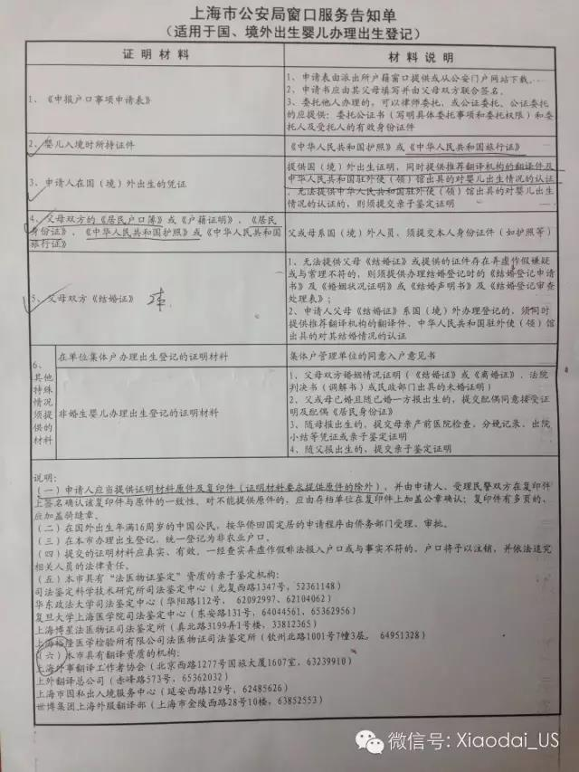

如何为美国出生的宝宝办中国户口
如何为美国出生的宝宝办中国户口
“为什么要办中国旅行证，美国护照中国签证回国不是更好么？”。
答：这个不是为什么的问题，原文只是阐述了一个事实。即，何种情况你必须办旅行证，何种情况你必须持中国签证回国。而这两者之间有着本质区别。前者中国政府认为你宝宝具有中国国籍，而后者你宝宝已经不再具有中国籍了。想一想中国的发展之迅速，再过二十年，对你孩子来说，一个中国国籍可能比一个美国国籍更有价值，而他申请中国国籍之路也很可能比你现在申请美国国籍之路更艰难。
也有很多人对我的这种想法表示不屑甚至怨愤，逼问我，“难道你还想什么便宜都占了？”对这种问题，我只能回答 “你手里那么多钱，难道还想既买车又买房？难道还想什么便宜都占了？” 我的权利，我为什么不争取?
那好，今天我就把申请中国户口和中美双国籍的事儿掰开了揉碎了说一说，大家一起讨论。
简单的说具有中国籍的宝宝可以申请中国户口。关于哪些外国出生的宝宝具有中国籍，请参阅旅行证新政策： 在美出生儿童两年不回国视为自动放弃中国籍(这个政策有变化，详情咨询户口所在地派出所)，不能办旅行证 。简单的说如果你的宝宝是持有旅行证回国的，可以申请中国户口.
2，为什么要申请中国户口
有了中国户口，宝宝就可以享受一切中国公民的合法权益。比如，领取生育补助金，享受医疗保险，按当地规定去公立学校读书，而不是去那些又贵、教育质量又不怎么样的国际学校，等等。
3，中国户口会影响宝宝的中国国籍吗？
当然不会。当然你也可以选择不办。对中国政府来说，你的宝宝是中国国籍。她的美国国籍是不被承认的。这个你没的选，办不办户口都这样。
4， 中国户口会影响宝宝的美国国籍吗？
美国政府承认你宝宝的出生美国国籍，也承认她从父母那儿继承来的中国国籍。她有没有中国户口，美国政府无从知道，也不想知道。一直以来很多人对美国的宪法有个误解，即 “美国不承认双国籍，18周岁后小孩必须宣誓选择或放弃国籍”。现行宪法是支持双国籍的，只有18周岁后才可以宣誓主动放弃：
“U.S. law does not mention dual nationality or require a person to choose one nationality or another. Also, a person who is automatically granted another nationality does not risk losing U.S. nationality.... In order to lose U.S. nationality, the law requires that the person must apply for the foreign nationality voluntarily, by free choice, and with the intention to give up U.S. nationality.”
[Ref1]
http://travel.state.gov/content/travel/english/legal-considerations/us-citizenship-laws-policies/citizenship-and-dual-nationality/dual-nationality.html
[Ref 2] US Constitution
所以实际上很多美国出生的宝宝对中国政府来说只具有中国国籍（由父母国籍确定），对美国政府来说具有双国籍（出生地确定的美国国籍，18周岁前无法放弃，同时也承认中国国籍）。这些都是我们无法改变的事实。办中国户口是在这个身份下享有的一个权利。
最后说一说如何办理中国户口。以上海为例，很简单准备好一下材料，去父母之一的户籍所在地，填申请表递交，等45个工作日即可。父母去办理即可，不用带上宝宝。
1. 宝宝入境时所持证件（旅行证）
2. 父母双方的户口簿或户籍证明
3. 父母的身份证
4. 父母中国护照
5. 父母双方的结婚证（两本), 如遗失，可去民政局补办。
6. 申请人在国外的出生凭证。这一条比较麻烦，必须经多次认证和翻译。以美国加州出生的宝宝为例：
6.1 County 签发的出生证
6.2 把出生证寄到州政府进行县政府签章认证
[Ref3]:
http://www.sos.ca.gov/notary/authentication/
6.3 带上出生证和州政府的认证去中国使领馆进行州政府签章认证。
6.4 最后带上三联页去国内指定机构翻译
有图有真相 :)
About us
We provides bay area events and activities information.
Contact
funsbayarea at gmail.com.